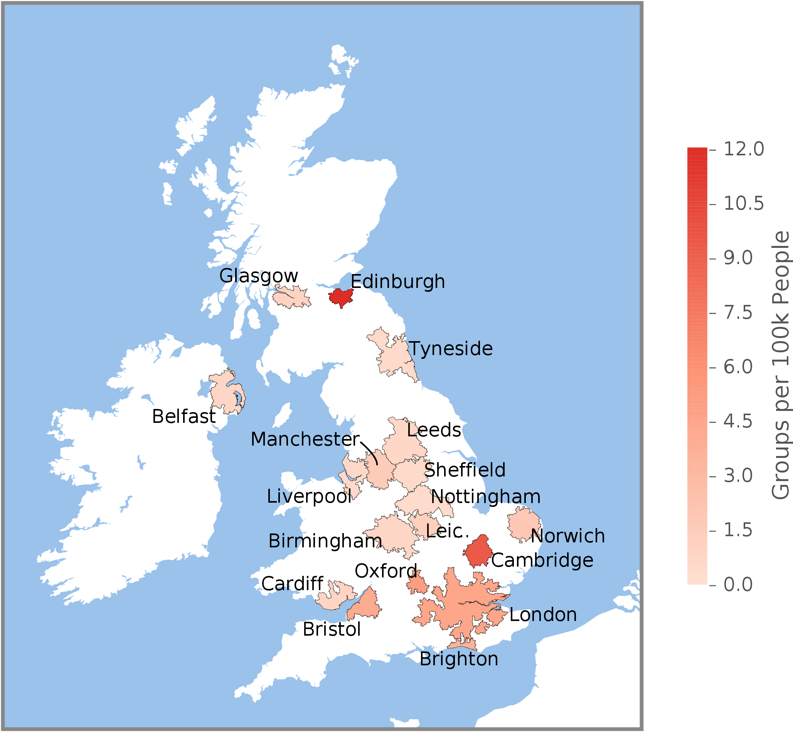
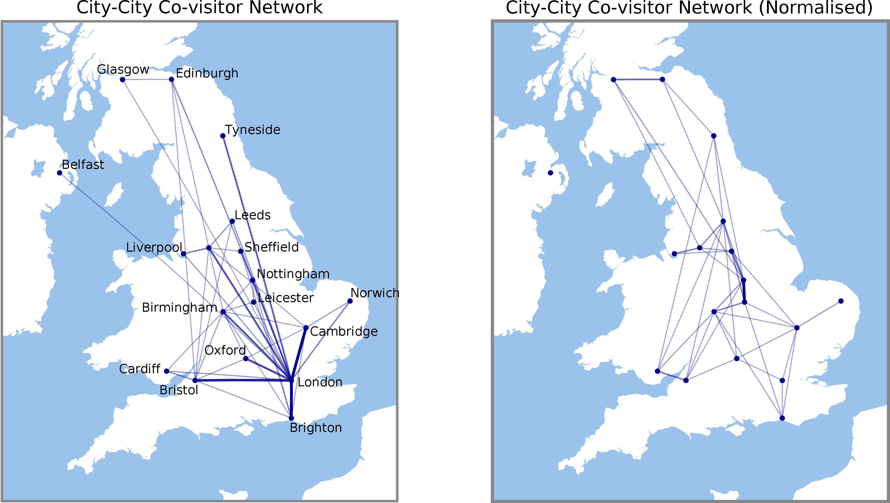
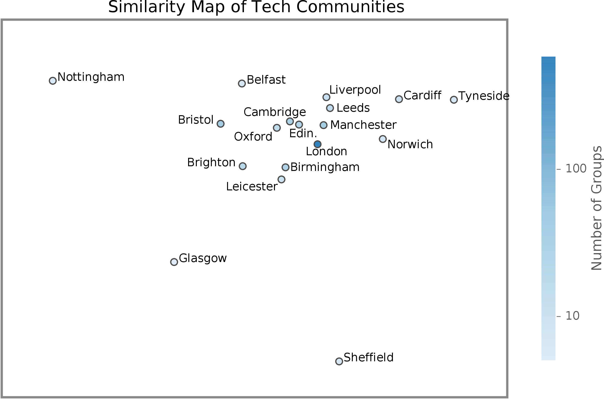
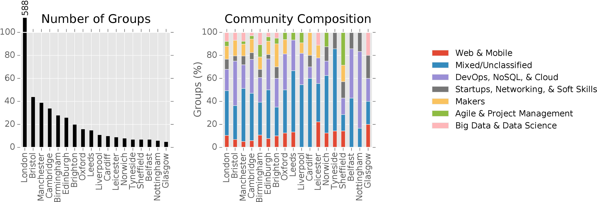

Exploring the Geography and Composition of Technology Meetup Communities in the UK
– Matt J Williams –
Meetup provides a rich dataset for the study the composition of tech communities in the UK, and in other counties across the world.
As a regular user of Meetup, I have experience first-hand its value in discovering communities and keeping in touch with them. For organisers and community leaders, Meetup is an extremely useful tool for managing events.
For researchers and data scientists interested in the UK's technology landscape, Meetup can give us insight into what kind of skills are dominant in an area, and what makes a community successful, as demonstrated in this recent post on Nesta's blog.
In this blog post, I present an initial look at two related questions regarding tech communities in the UK:
- How does geography shape the interactions between different communities?
- What is the composition of the tech community in each city?
Technical details on the methods used in this analysis can be found in the Supplementary Technical Notes at the end of the post. All code and scripts are open source and available in this Github repository.
The data
Using Meetup's open API I collected a dataset of all Meetup groups in the UK belonging to the 'Tech' category, including their recent events and member profiles. These groups were obtained for the top 200 most-populated cities and towns in the UK, resulting in an initial dataset of 1,588 groups. Given the age of Meetup (almost 13 years old!), many of these groups may be defunct. To focus only on active communities, any groups that don't have at least one event with two or more attendees in the last three years were discarded.
Rather than using Meetup's own city designations, we determine the metropolitan area each group belongs to by using the Eurostat's Functional Urban Areas (FUA) boundary data. This gives us with a consistent definition of an urban area across the UK (and even Europe, if we wanted to expand our study later), and comes with population statistics. For the rest of this post we'll use the FUA definition of city.
The resulting dataset consists of 932 active groups. We further filter the data down by discarding cities with too few groups (four or fewer) for any meaningful analysis, giving 880 groups across 18 cities, and totalling 69,510 users.
Unsurprisingly, London has the most active community, with 588 groups. As noted previously, it would be interesting to compare Meetup activity with population size. As we see in the following chart, while London is among the most-active tech communities in the UK, Edinburgh and Cambridge are both ahead in density.

How are communities shared between cities?
To answer this question we can look at how many attendees each city has in common. Our dataset includes the list of members who RSVPd to each event in a city, and so we can quantify how many attendees a pair of cities has in common.
In the following charts, we visualise the strength of integration among pairs of cities. The intensity of a link between two cities indicates the amount of overlap in their communities – the thicker the link the more in common. For many pairs of cities there are very few shared members, so we only visualise the top quartile of connections.

The network in the left-hand figure shows the total number of users in common. London emerges as a hub, having strong connections to most other cities. This isn't surprising – London has very good transport links (both land and air) with the rest of the UK, and hosts many unique speakers and events that would attract attendees from across the country.
Also, by simply being a large city with many active Meetup users, London has more users to have potentially visited other cities. We can think of this in terms of the Gravity model of trade and migration – each city has a mass (its number of local users), and larger cities have more potential to attract visitors from other cities.
The right-hand figure shows the network after we normalise by the masses of the two respective cities. London's role is now diminished, and its remaining significant interactions are with Cambridge and Oxford (let's not forget the Golden Triangle, with many highly skilled STEM professionals, plus extremely good transport access), and Brighton (also an established tech hub).
Some key pairs of neighbouring cities merge: Cardiff and Bristol; Nottingham and Leicester; Glasgow and Edinburgh. We also see denser connections around the central midlands.
Of course, we have to make the assumption that a user physically attends an event they've joined. I know from personal experience that this is not always true! At the least, however, , even if it's aspirational.
(Note: An alternative way to do this would be to associate each user with a home city and then study their visits to other locations. Although the API provides the current city for a user, we'd need to also check that they haven't moved home town during the observation period.)
Geography note that this is only an approximation of the real behaviour. Ideally we would identify a user's home location.
What is the composition of each community?
PCA. Many areas have similar profiles: e.g., many places have a web development meetup group. What's more interesting is the other differences.
City-city connectivity. Raw co-visits: London is, unsurprisingly, a hub, simply beacuse it has a large number of groups there. And, good transport access to other locations. As we saw earlier, some cities are much more active than others. In the gravity model, this means they have more mass, and so attract interactions with other cities, especially other cities that also have high mass.
So how about we adjust for the size of the cities? Now we see London dimish. Its remaining significant interactions are with Cambridge and Oxford (the Golden Triangle)?), and Brighton (a well-known tech hub). There are many factors that influence how many people visit both cities, including access, transport, and intereset. Also, London is full of many people who haven't needed to move to visit another place -- the tech community is on their doorstep. In other cities, one might need to travel further, to a neighbouring hub, (or maybe to london!) to visit.
This gives us an idea of the amount of movement people have to do.
It would be great to extend this analysis with the hometowns of each user.
Future work:
Nottingham and Cardiff are most dissimilar.
Conclusions and Outlook
This has been a first exploration of the tech communities across the UK. Raising some intersting questions for futher analysis.
Can we match the ecosystem of each UK city with a counterpart in the US?
As we've seen, the UK doesn't have a large number of cities for us to compare and contrast, but here are many cities in the US we might compare against. For a particular UK city we could match it with one or more US cities of a similar size and set of interests (e.g., extending group clustering we applied here).
What drives clusters of cities?
For example, in our analysis of integration between cities, we saw that there are places outside of London that have strong connections, such as the Bristol-Cardiff community, and midlands. Bristol and Cardiff are disimilar in their make-up -- does this drive the travel between them? Do small local communities have to travel more, to access specialists in other fields? Drive innovation in regions outsie of London.
Relative to the the number of active users in London, very few people leave. This is not surprising -- London has an abundance of most tech areas. Other places, however, become more specialised.
Match communities in different countries, e.g., the US. Then compare other features of their local innovation ecosystems to see if there are any differences, and potentially compare different policy implications.
Graphics


Data and Materials
All scripts and code (including the Markdown for this blog post) are available at the following Github repository:
https://github.com/mattjw/exploring_tech_meetups
Supplementary Technical Notes
The following notes give further detail on the methods used in this analysis.
Collecting Groups
The Meetup API provides a method for querying groups that belong to a particular city or are in proximity to a particular location. Geonames provides an open global gazetteer of cities with populations above 1,000 people. The crawler was seeded with the 200 most-populated cities in the UK according to Geonames. Groups in proximity to these cities were crawled. Duplicate groups (e.g., due to nearby cities) were discarded.
City/Regional Divisions
There are many ways to divide the UK into regions (also called 'spatial units'), and many ways we might define a city.
Ideally, we want to choose a definition of region/city for which we also have population statistics available, which will allow us to compare Meetup activity with the area's inhabitants. Plus, we want the definition to be consistently applied throughout the UK.
Fortunately, the European Union ESPON project undertook the task of defining metropolitan regions across 29 EU countries, including the UK. In particular, they define 'Functional Urban Areas' (FUAs). An FUA consists of an urban core, plus surrounding regions who have a strong commuter relationship with the core. This is a very convenient definition for our analysis, since it describes regions in which Meetup usrse are likely to travel to visit an event. (Incidentally, the US Census Bureau's definition of Core-based Statistical Areas is very similar, so we could extend this analysis to the US quite easily.)
The full list of the 46 FUAs in the UK, including their constituent regions, can be found here. The source data files, including boundaries and populations, can be found here under 'Functional Urban Areas database' . Most of the urban regions are intuitively grouped.
The FUA population statistics are estimates from 2006.
Normalising
Exact equation we use is:
$$\frac{s_{ij}}{m_im_j}$$
Labelling Groups
For simplicity in this initial investigation, we'll just allocate each group to one type. [LSA, hidden topic space of co-occurring keywords. Simple approach for now, but more work needed to .
For example, Web Design rarely appears without Web Technology. We know that these tags represent a hidden concept -- the Web.
These hidden topics were learnt on the whole dataset of Meetups. The number of clusters was decided using the Elbow Method, giving seven clusters. Each of the seven topics topic was the manually labeleld
The topics used in the analysis are as provided by the Meetup API. Of course, the quality and semantics of these topics is not necessarily consistent across all gruops. For example, Web Development, Web Technology, and Web Design have much in common.
Misc.
- Ideally, look at home-to-meetup patterns, but identifying home location is not trivial. Note that these may have changed in four years.